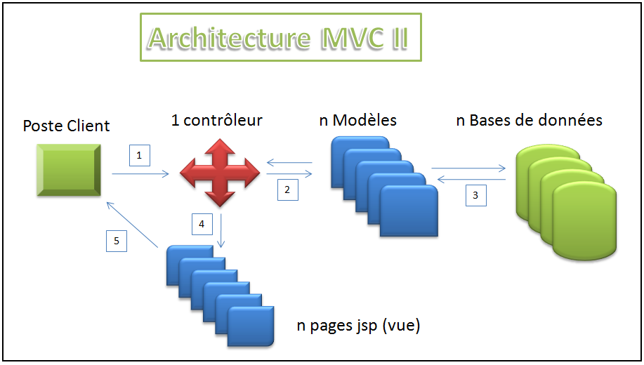
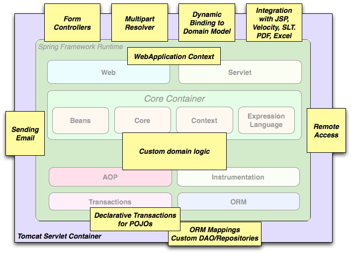
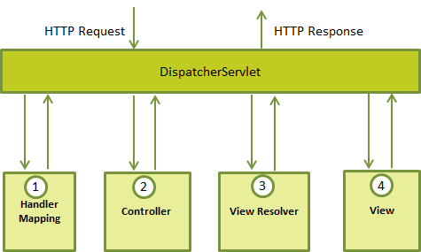

Spring
Formation au Framework couteau suisse
Créé par Tony MEMBOT via l'API de présentation Reveal.js
Spring
- C'est quoi spring ?
- Spring Core
- Spring MVC
- Spring Security
- Spring Batch
- Aller plus loin avec Spring
C'est quoi Spring ?
Un conteneur léger
- Framework reposant sur 3 grands principes
- Inversion de contrôle
- Programmation orientée aspect
- Couche d'abstraction (pour d'autres API)
- 2003 : première version
- 2016 : 4.2.3
- Libre

Attention aux versions !
Une version majeure = grand ménage de printemps
- La formation se base sur les versions suivantes :
- Spring Framework : 4.3.2.RELEASE
- Spring Security : 4.1.3.RELEASE
- Spring Batch : 3.0.7.RELEASE
Spring core
IoC : Inversion of Control
- Aujourd'hui renommé injection de dépendance
- Déresponsabilisation / Déspécialisation des classes
- On injecte dynamiquement les dépendances plutôt que de les écrire explicitement dans le code
public class Parking {
private Voiture voiture;
/** Constructeur qui crée une voiture spécifique: pas d'IoC */
public Parking() {
voiture = new Clio();
}
/** Constructeur avec voiture: compatible IoC */
public Parking(Voiture voiture) {
this.voiture = voiture;
}
}
Exemple XML
- Dépendances maven sur spring-context
- Un fichier xml de configuration principal
- Déclaration de bean et d'injection de dépendance via l'xml
- Chargement du context spring pour utilisation
- Explorons le projet Spring 1 ...
Exemple Annotation
- Dépendances identiques
- Une classe de configuration principale
- Déclaration des beans et injection de dépendance via les annotations
- Chargement du context spring dans le main légèrement différent
- Explorons le projet Spring 2 ...
Annotation ou XML ?
- Pas de best solution
- On peut quasi tout faire dans les deux solutions
- Utiliser le meilleur des deux : un mix, exemple
- Annotation pour tout ce qui est static
- XML pour tout ce qui est plus dynamique
- Mais attention, la communauté tend vers le full annotation
@Component
- Sur la classe VoitureDeCourse, va créer un bean nommé "voitureDeCourse"
- On peut préciser ce nom
@Component(value = "voiture2course") - @Service, @Controller, @Repository sont des spécialisations
- On laisse spring gérer l'instanciation
@Bean
- Disponible uniquement si on utilise @Configuration
- Sur la méthode myVoitureDeCourse, va créer un bean nommé "myVoitureDeCourse"
- On peut préciser ce nom
@Bean(name={"voiture2course"}) - C'est le développeur qui gère l'instanciation
@Bean factory
@Bean
@Scope("prototype")
public SomeService someService() {
switch (state) {
case 1:
return new Impl1();
case 2:
return new Impl2();
case 3:
return new Impl3();
default:
return new Impl();
}
}
Les injections de dépendances
@Autowired
- Injection par type
- Et si on a deux implémentations de la même interface ? => Démonstration
- Avec
@Qualifier("name"): injection par nom - Peut préciser qu'il n'est pas obligatoire
@Autowired(required = false) - Annotation Spring
@Resource
- Injection par type
- Même souci sur la double implémentation que @Component
- Pour injecter par nom :
@Resource(name = "name") - Annotation Java
@Resource(name = "toto")
private Toto toto;
==
@Autowired
@Qualifier("toto")
private Toto toto;
@Resource ou @Autowired ?
Sur des injections de propriétés, il est préférable d'utiliser @Resource qui est un standard Java et qui est fait pour ça.
Setter ou constructeur ?
On peut mixer les deux. La logique veut qu'on mette en setter les dépendances facultatives et en constructeur les obligatoires.
Le scope d'injection
- Modifions un peu le projet Spring2 ...
- Par défaut, tout est singleton !
- Scopes :
- Singleton
- Prototype
- Request *
- Session *
- GlobalSession *
Injection de collections
- Types disponibles :
- list
- set
- map
- props
- Tout est string dans un fichier xml ...
- ... mais il existe des converters automatiques
- Explorons le projet 3
- Et l'injection d'une valeur null ?
Customiser ses beans
init-method
L'héritage / Surcharge des beans
Testons !
- Instancier via un new (projet 1)
- Compléter le projet Exo 1 ...
- Créer les beans des voitures clio / ferrari / lotus
- Créer deux parkings
- Concession : avec deux clio, une ferrari, deux lotus
- Occasion : avec deux clio, une lotus
- Les parking initialisent les niveaux d'essence via initEssence()
- Créer le bean garage référençant les deux parkings et le commercial
- GarageApplication doit tourner !
Spring properties
- Externaliser les données "changeantes" / techniques
- Chargement de properties dans le context spring
- Récupération des valeurs directement dans l'initialisation d'un bean ou via un @value
- Possibilité de mettre en place un système de surcharge
- Possibilité de mettre des valeurs par défaut
Spring Web (MVC)
MVC : un petit rappel
Spring & le web
Le dispatcher
Le dispatcher
- Spring web tourne autour du servletdispatcher (remplace notre main)
- Chef d'orchestre des appels HTTP et de leurs traitements
Request HTTP basique
- Récupération du bon controller
- Aiguillage (POST/GET) & préparatop, les datas
- Récupération de la bonne view (JSP, ...)
- Fusion des datas dans la view
Explorons le projet spring 5 ...
Spring EL
- EL = Expression Language
- Spring EL = EL au niveau injection / context spring
- Explorons le projet spring 6 ...
Les ressources statiques
- Si tout est résolu par le resolver .. tout est jsp ?
- Et les js, css ?
- Spring peut définir un context de ressources statiques
- Exemple dans le projet spring 6 ..
Redirect & Forward
- Toujours utile pour le pattern POST/Redirect/GET pour gérer les submit multiples
- Redirect = retour vers le navigateur avec une réponse http 302 (redirection) vers la nouvelle url => on perd la request
- Forward = redirection interne au serveur, transparente pour le navigateur et l'utilisateur => on conserve la request
-
Depuis la 3.1, Spring intègre les RedirectAttributes ...
http://www.tikalk.com/redirectattributes-new-feature-spring-mvc-31/ - Exemple dans le projet spring 7 ..
Controller - signature dynamique
- Comment récupérer la request ? la response ? via l'injection spring
- http://docs.spring.io/spring/docs/current/spring-framework-reference/html/mvc.html#mvc-ann-arguments
Gestion des formulaires
Formulaire de saisie
- Utilisation d'une taglib pour le form
- Passage des data par un bean nommé "command" par défaut (paramétrable)
- Le submit popule ce bean que l'on récupère dans le controller
- Exemple dans le projet spring 8 ..
Gestion des autres input
- Spring gère également les select, textarea, checbox, ...
- Norme HTML => un checkbox décoché n'est pas envoyé dans le post
- Exemple dans le projet spring 8b ..
Gestion d'un appel Ajax
- Mapping object / data simplifié par Spring
- Gestion de l'XML, du JSon, ...
- Ajout des dépendances correspondantes
- Exemple dans le projet spring 8c ..
Upload de fichier
- Spring gère églament l'upload des fichiers
- Quelques dépendances supplémentaires sont nécessaires
- Exemple dans le projet spring 8d ..
Spring message / internationalisation
- Utilisation d'un message resource : ReloadableResourceBundleMessageSource
- Injection du bean dans les classes Java
- Utilisation de la taglib spring:message pour les JSP
- Internationalisation :
- Gérer par défaut par la locale http (navigateur)
- Gestion de priorité de la locale : application_fr_fr / application_fr / application
- Exemple dans le projet spring 9 ..
Valider un formulaire
Pré version spring 4.X
Valider les informations d'un formulaire
Post version 4.X
- Spring réalise son implémentation avec @validated
- Création de classe implémentant l'interface Validator
- Utilisation de form:error pour remonter les erreurs
- Exemple dans le projet Spring 10 ..
Filter encoding
- Filtre au niveau spring
- Permet de traiter les données HTTP dans l'encoding cible
- Ne dispense pas de setter correctement l'encoding sur les vues
Spring security
Init
- Gestion d'authentifications et d'autorisations
- Brique à part entière (ne suis pas les versions)
- Fichier de configuration à part
- Configuration minimale pour une utilisation directe
- Exemple dans le projet spring 11...
Personnalisation
- Personnalisation de la page de login
- Personnalisation des redirection logout
- ...
- Exemple dans le projet spring 12
Testons Spring Web !
- Compléter le projet Exo 2 ...
- GarageController doit mapper / pour renvoyer la page index.jsp
- Afficher le nom du commercial dans le message d'accueil
- Afficher les parkings
- Afficher les voitures dans chaque parking
- Mettre en place un bouton permettant d'ajouter de l'essence pour tout le parking
- Mettre en place un formulaire au niveau parking pour ajouter une voiture via un input
- Modifier ce formulaire pour prendre une liste de nom de voitures à la place de l'input
Spring Batch
Spring Batch
- Gère des opérations récurrentes et/ou de gros volumes de données
- Brique à part entière (ne suis pas les versions)
- Gestion des transactions, des logs
- Console d'administration web (start/stop/restart/skip/retry)
- Difficile d'accès / complexe
- Exemple dans le projet spring 13..
Aller plus loin avec Spring
Spring c'est aussi du ...
- Cache (ehcache)
- JDBC / JPA (Hibernate)
- JMS
- REST
- AOP
- Templating (thymeleaf)
- ...
Spring 5
- Release prévu en Mars 2017
- Niveau de compatibilité drastiquement augmenté
- Java 8+
- Hibernate 5+
- JPA 2.1+
- Inclusion de spring reactive
Spring 5
- Abandon du support de nombreuses librairies :
- PortletMVC
- JDO
- Guava caching
- JasperReports
- OpenJPA
- Tiles 2
- XMLBeans
- Velocity